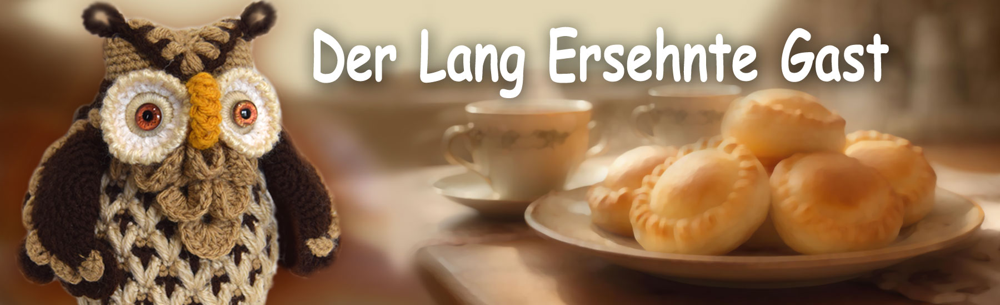

Märchen von Philomur, dem Kater
getreu aufgezeichnet von seinem treuen Bewunderer — Michel, der Rattenjunge

Der lang ersehnte Gast
Der Tag glitt leise davon und versteckte sich hinter dem Hügel. Die Sonne sank in den Teich und hinterließ lange goldene Streifen auf dem Wasser, und nur die alte Eiche am Bach hatte es nicht eilig, einzuschlafen.
In ihrer breiten Baumhöhle lebte Sofia – eine weise Eule, Hüterin der Geheimnisse des Waldes. Sie sortierte gerade Wollknäuel, als sie plötzlich eine leichte Bewegung der Luft spürte.
Lautlos setzte sich ein Eulenküken auf den Ast neben der Höhle. Es zögerte ein wenig – ihm war es peinlich. Es hatte erfahren, dass es noch eine weitere Großmutter gab, und das hatte seine Neugier geweckt. Deshalb war es gekommen. Doch wie es seinen Besuch erklären sollte, wusste es überhaupt nicht.
Sofia schaute nach draußen.
„Hallo! Da bist du ja. Warum sitzt du dort? Komm herein.“
Das Eulenküken zuckte zusammen:
„Du… wusstest, dass ich kommen würde?“
„Natürlich wusste ich das“, lächelte Sofia und öffnete mit ihrem Flügel sanft den Eingang zur Höhle.
Mitja – so hieß das Eulenküken – trat vorsichtig hinein.
Warm. Gemütlich. Der Duft von Kräutern, gebackenem Kohl und weicher Wolle. Auf dem Tisch stand ein Teller mit goldbraunen Kohlpastetchen.
„Setz dich, bedien dich.“
„Kohlpasteten?! Meine Lieblingspasteten!“
„Meine auch“, antwortete Sofia sanft.
Das Eulenküken nahm eine Pastete, biss hinein und schloss vor Genuss die Augen:
„So lecker! Backst du sie… jeden Tag?“
„Nein. Nur wenn ich auf einen besonderen Gast warte.“
Mitja hob erneut den Blick:
„Hast du auf mich gewartet?“
„Ja.“
„Schon lange?“
„Schon immer.“
Er blinzelte erstaunt:
„Aber… woher wusstest du das?“
Sofia neigte den Kopf:
„Das haben mir die Waldgeister gesagt.“
Das Eulenküken erstarrte:
„Die Waldgeister?.. Und was haben sie dir noch gesagt?“
„Dass morgen ein regnerischer Tag wird. Und nächste Woche warm und sonnig.“
Mitja senkte die Stimme:
„Wirklich… Hast du sie auch gesehen?“
„Ja, habe ich.“
Das Eulenküken holte tief Luft:
„Mir hat man immer gesagt, dass es keine Geister gibt. Dass das alles Fantasie ist. Und dass man darüber besser nicht spricht… sonst denken sie, dass ich… na ja… irgendwie anders bin.“
Sofia strich ihm mit der Spitze ihres Flügels sanft über den Kopf:
„Das werden sie. Aber nur diejenigen, deren Welt sehr klein ist.“
Sie stellte ihm sanft einen großen Korb mit Wollknäueln, Häkelnadeln und kleinen gestrickten Spielzeugen hin:
„Möchtest du spielen?“
„Oh! Wie schön! Und was machst du mit ihnen?“
„Wenn ein Spielzeug fertig ist, schenke ich ihm eine Seele – und dann geht es, um in einem Märchen zu leben.“
„Ich kann auch stricken… Aber man hat mir gesagt, das sei nichts für Jungen.“
„Ich weiß“, nickte Sofia.
Sie holte ein kleines grünes Häschen hervor:
„Dieses hier hat mir davon einmal erzählt. Erkennst du es?“
Das Eulenküken keuchte:
„Das habe ich doch gestrickt… vor sehr, sehr langer Zeit.“
Sofia nahm ein Knäuel rostroter Wolle:
„Schau. Einst lebte in diesem Faden eine kleine Mottenlarve. Sie konnte sich nur vor und zurück bewegen – entlang eines einzigen Fadens. Für sie ist die ganze Welt ein schmaler Gang. Eindimensional.“
Sie deutete auf den Schrank:
„Und dort lebt ein Mäuschen. Es ist nie nach draußen gegangen. Für das Mäuschen ist die Welt flach wie eine Seite. Zweidimensional.“
Sofia breitete die Flügel aus:
„Und wir Vögel können fliegen. Wir sehen den Wald, den Teich, die Lichtung, den Sonnenuntergang. Eine Welt mit drei Dimensionen.“
Mitja hörte zu, ohne sie zu unterbrechen. Sofia fuhr leise fort:
„Wenn man dem Mäuschen vom Fliegen erzählt und davon, wie die Eiche von oben aussieht, wird es nicht glauben. Es wird sagen, das seien Fantasien. Seine Welt ist zu klein für den Himmel.“
Mitja bewegte einen Flügel:
„Also… können sie einfach nicht sehen, was ich sehe?“
„Ja, mein Lieber. Und das macht dich nicht falsch. Es gibt einfach mehrdimensionale Welten. Und nur wenige betreten sie – diejenigen, die ein wenig früher in diesen Wald kommen, als die Welt sie begreifen kann. So wie du.“
Das Eulenküken schwieg lange. Dann fragte es fast flüsternd:
„Also… gibt es die Waldgeister? Nur nicht alle sehen sie? Und die, die sie sehen… sind gar nicht…“
„Ganz genau“, lächelte Sofia und legte einen Finger an den Schnabel.
„Schsch… Das ist ein Geheimnis.“
Mitja nahm vorsichtig noch eine Pastete:
„Dann… bin ich froh, dass ich gekommen bin.“
Sofia lächelte leise:
„Ich auch. Und es tut mir leid, dass ich früher nicht bei dir sein konnte.“
Und in diesem Moment entstand zwischen ihnen eine Stille – jene tiefe, echte Stille, in der keine Worte nötig sind.
Und Sofia dachte still:
„Wer seine Wurzeln kennt, findet immer den Weg zu sich selbst.“

🌟 Fragen und Aufgaben für junge Leserinnen und Leser 🌟
1. Worum geht es in diesem Kapitel? Erzähle die Geschichte in 3–5 Sätzen.
2. Wer ist die Hauptfigur dieses Kapitels? Beschreibe sein (ihr) Aussehen, seinen (ihren) Charakter und seine (ihre) Stimmung.
3. Wähle eine Szene, die dir am meisten im Gedächtnis geblieben ist. Zeichne sie und füge kleine Details hinzu, die du für wichtig hältst.
4. Wenn du der Hauptfigur eine Frage stellen könntest, welche wäre das? Schreibe sie auf – und versuche, sie aus der Sicht dieser Figur zu beantworten.